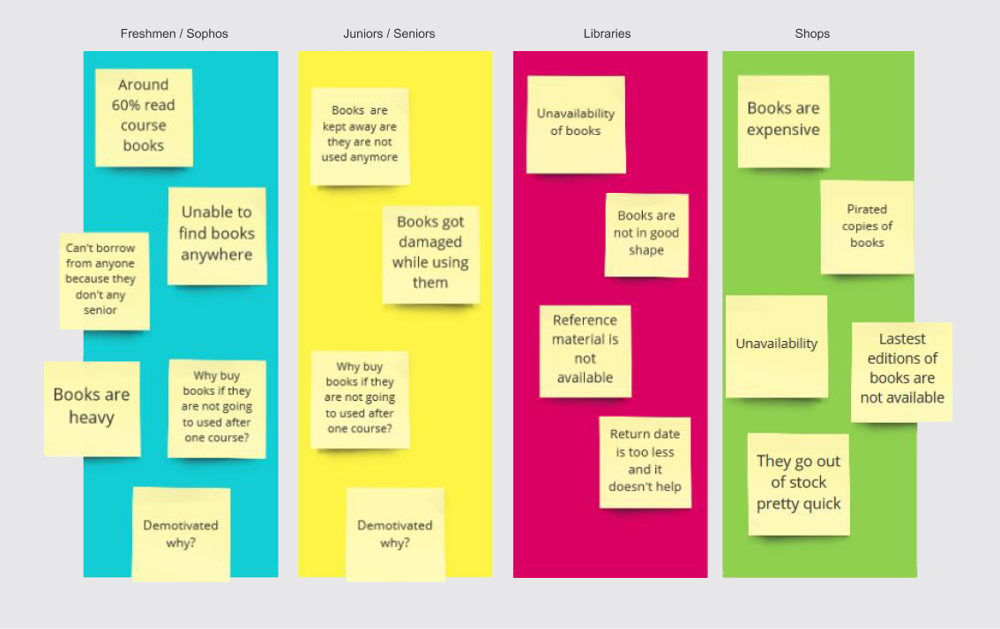
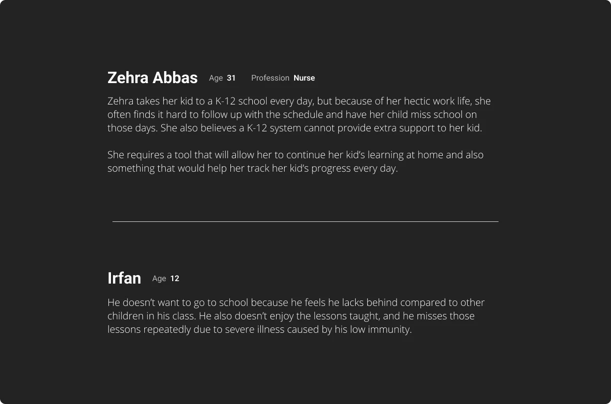
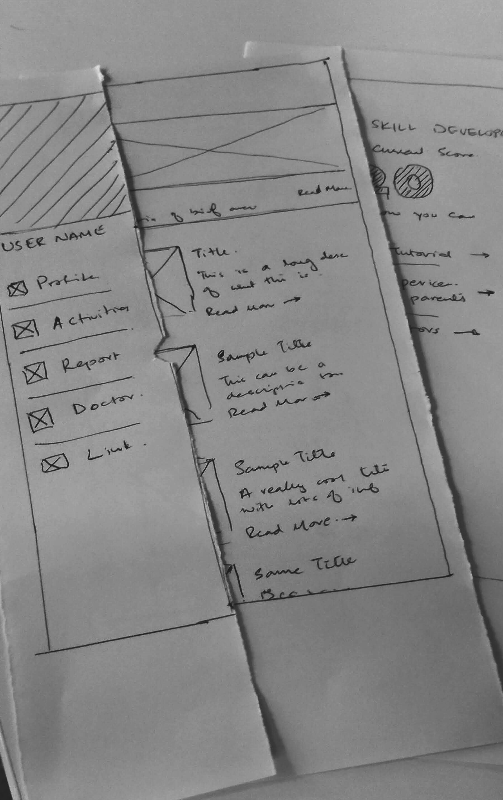
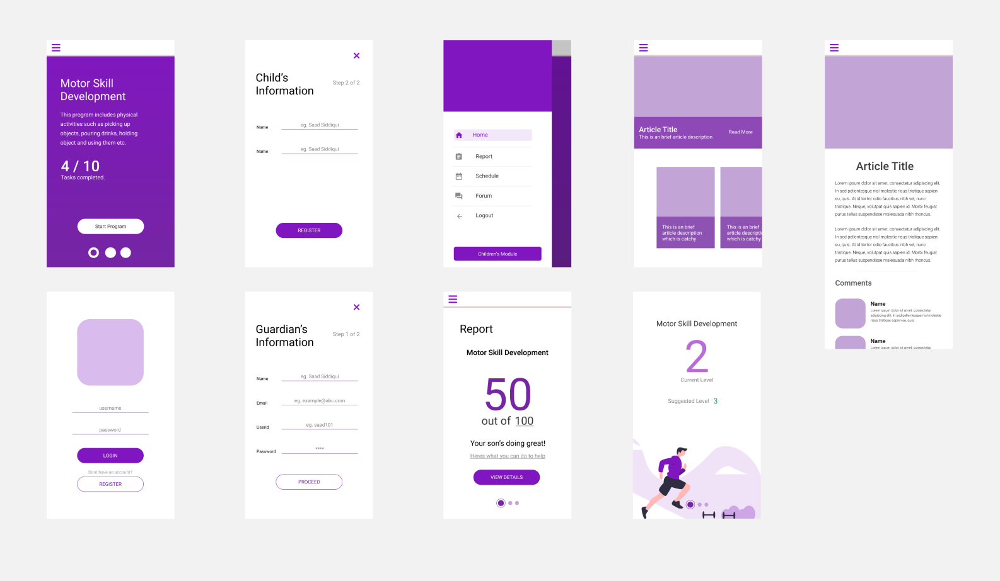
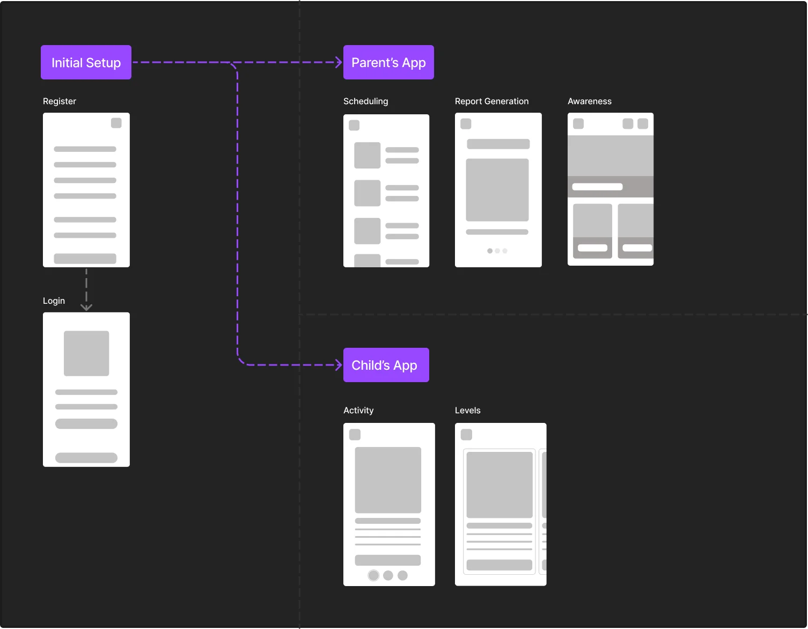
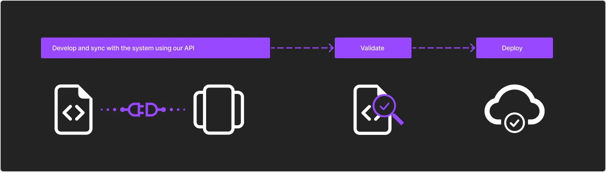
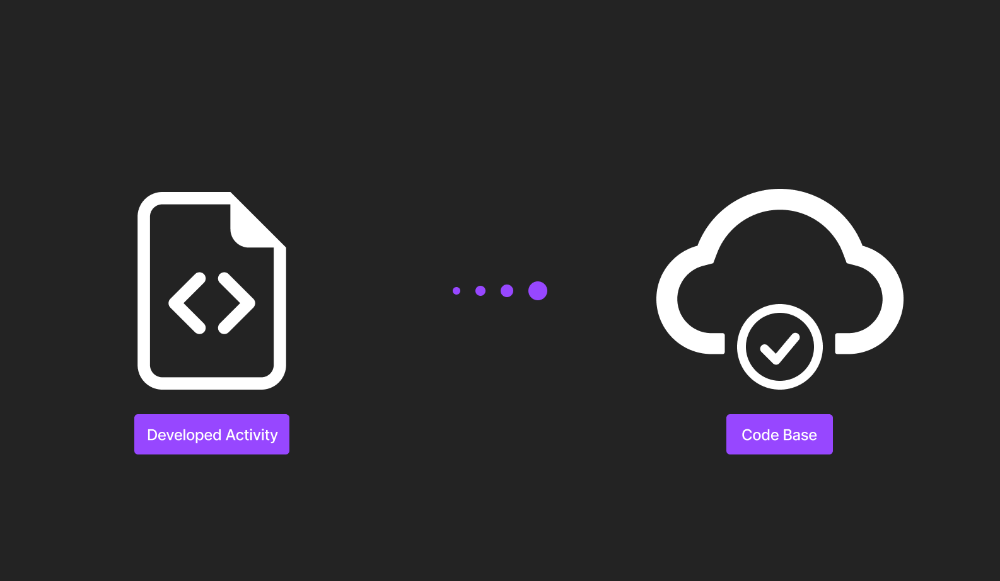
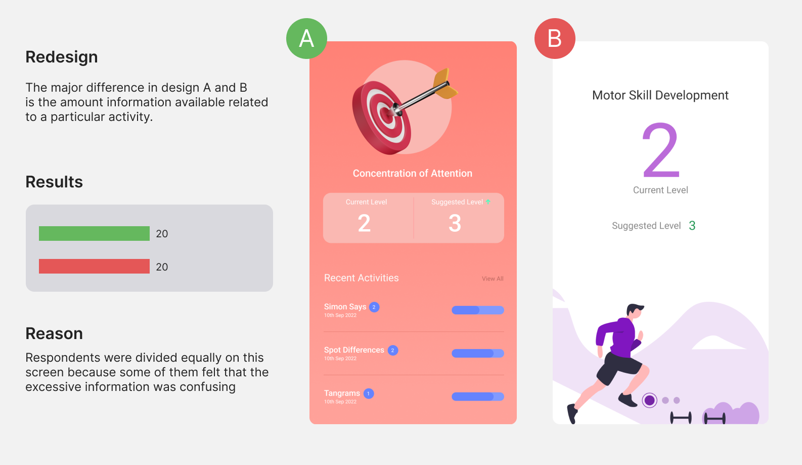

Children with Down Syndrome are commonly known for the genetic disorder that is due to the existence of an extra copy of chromosome 21. These children suffer from both medical and physical impairment, however, the degree of impairment may vary for each child.
As a design researcher, my goal was to highlight issues and limitations of eductional tools for children with down syndrome and drive out user needs by providing a hypothetical solution.
Audience
Children
Parents
Schools
Hospitals
Deliverables
Proposal
Technical Documentation
Feasibility Analysis
Report and Findings
Activities
Interviews, Market Analysis
Personas, Paper prototyping, Wireframes, Architecture
Prototyping, Preference & Eye Tracking Test
We used a qualitative research method to understand the needs of children with Down Syndrome. Therefore, we developed a 19 questions questionnaire, proofread by the research supervisor for authentication, and then taken to the Karachi Down Syndrome Program (KDSP), where we conducted interviews.
Following are some key takeaways from the interviews
Medical Issues
Medical problems associated with Down syndrome can vary widely from child to child. While some kids and teens need a lot of medical attention, others lead healthy lives. Students with Down syndrome may: need to go to the school nurse for medications when necessary, miss class time due to frequent doctor visits.
Additional Assistance
The respondents also reported that children with Down Syndrome need visual and auditory accommodations for classroom instruction, require physical, occupational, and speech therapies, need extra time and assistance with classwork and require therapeutic staff support in the classroom.
Parents' Involvement
According to our research at KDSP, many teacher showed concerns for the lack of parents' involvement in the learning process of their child. They stated that if parents were more involved alongside teachers, learning could be much faster.
In order to understand the current landscape of eductional tools for the children, we also conducted a market research.
A tool called MathDS Math Down Syndrome was developed in two different languages, Malay, and English, to favor children with Down Syndrome. It has three different features: Learning, Activities, and Practice. Through this application, children can learn at their own pace. WAVE is another free tool available that provides evaluators with the accessibility of web pages (WEBAIM, 2001). It is an application that provides resources to users like courses and course material. Students with disabilities can learn these courses at their own pace easily.
Following are some key points highlighted while researching various tools
Accessibility
While there is a wide variety of tools available, most of them are hard to find, and they are not easily accessible by parents. Some of them were only available for special schools and the cost to access them was very high.
Validity
Some tools used proper research and validation from various Psychologists to build and improve, while others gave no proof of validation, making parents hesitant to use them.
Connectivity
While many tools performed well, they still had no means for parents to measure their child's performance nor had any facility to export any reports generated.
Organization: A Mind map highlighting key points of interest
How can we build an easy-to-use platform to help make educational tools for children with down syndrome more accessible?
User Persona
To understand our users better, we divided them into two groups to focus on their individual needs. Below I've highlighted the major characteristics of both of our user groups.
User Persona: A qualtative summary of user personalities
Paper Prototyping
We used paper prototypes as a quick way to validate our understanding of user needs show experimenting with the key stakeholders of the project. This activity gave us a starting direction for initial designs.
Paper prototypes demonstrating main screen and the side-menu.
Initial Designs
After gathering requirnments, we drafted an initial design focusing on two main things, i.e. user flow and content layout.
Initial Designs of In-brain app
System Overview
To get a big picture of all the functionalities of our internal system, we created a system diagram.
Organization: High-level system diagram
We also laid out a complete workflow for our external system (API) that will be used to develop various educational tools and sync with our internal system.
A brief workflow for our external API
Intuitive children's interface partnered with an analytical app for parents
To make the interface simple, the first design decision we took was to separate the two major functionalities. Technically this also helped us reduce the size of each application and allowed parents to download the analytical app only in case they are only exploring. Switching between applications was designed with ease and security in mind therefore we used encrypted codes to connect both applications.
Video demonstration: Split-app feature
Account Management and Scoring
Report generation after completing a task and managing an account was allowed only in the analytical app for the parents reducing the chances of mistakes and slips when a child is holding the phone. The individual scores from each category (identified during research at KDSP) accumulate into the overall score, all of which is generated by obtaining performance data from the child's module.
Video demonstration: Account management and scoring feature
Doctor/Psychologist Consultation
After generating a report, parents could book a consultation with a child specialist and attach the generated information.
Video demonstration: Doctor consultation feature
Evaluation and Testing
Preference Testing
For evaluating our solution and gain feedback, we conducted a preference test with 40 people recruited carefully using our initial personality definition. Test results of two screens are shown below.
Preference Test 1
Preference Test 2
Eye Tracking Test
Since our initial test gave us an insight about the user's preference for a certain amount of information on the screen, we conducted a few eye tracking tests on main functional screens. One of those results is given below.
Key Points
1. More than 70% (avg) prefered new designs due to easier access to
actionable items.
2. It was observed that people preference for quantity of data on a screen
had a direct relation with their digital literacy.
3. Eye tracking results directed our design decisions to organize information and actions in much better
way.
Eye Tracking Test
Conclusion
According to the research question at the beginning of this study, we have found that currently there is a gap in the discoverability of educational tools for children with Down Syndrome and the unavailability of one coherent application to assist parents in taking part in their child's educational needs.
Our solution to the researched problem was catering to all the important key factors such as accessibility of the platform, the connectivity between doctors and parents, limitations of other tools in the market, etc.